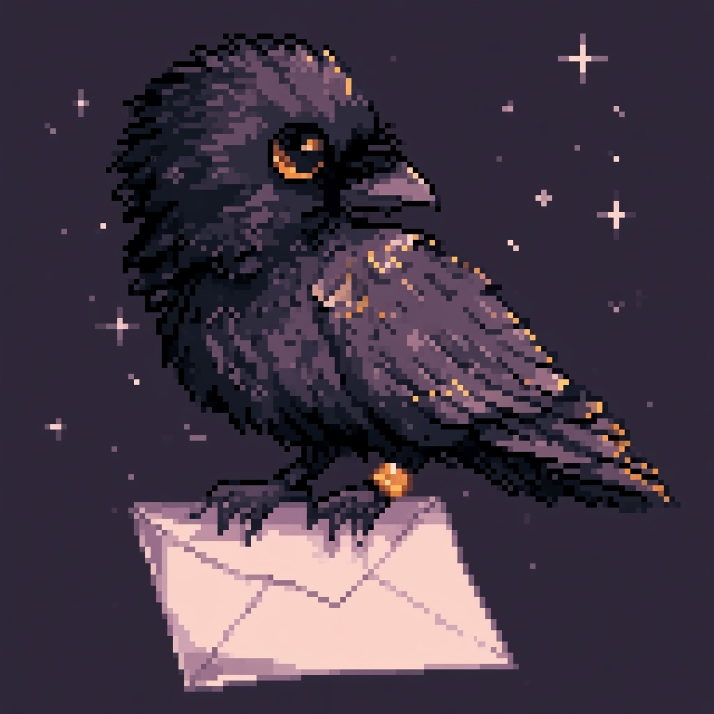

The raven lost this scroll.
Whatever was filed at this address has flown; the shelves hold no record of it. The archive itself, happily, is intact.
error = 404 · scroll_not_found

Whatever was filed at this address has flown; the shelves hold no record of it. The archive itself, happily, is intact.
error = 404 · scroll_not_found